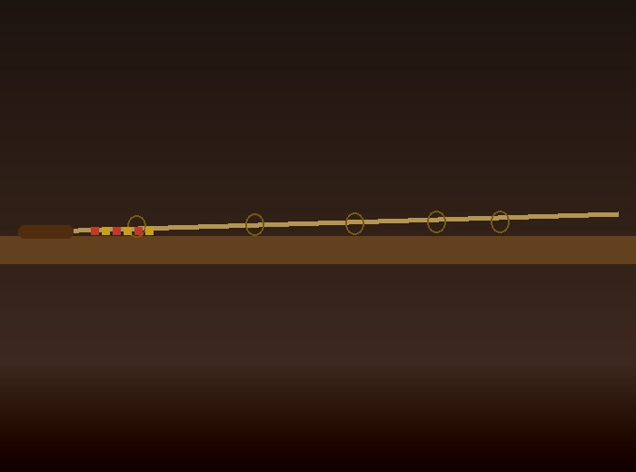

Handcrafted in Florida
I Can Build It.
Contact MeHow It Works
From tuna to snook to largemouth — I'll help you select the right blank for your species, technique, and Florida waters.
Fuji guides, premium cork, custom reel seats — you decide the quality and look of your build from a wide range of components.
Any color combo or theme. Team colors, custom inscriptions, matching sets — the possibilities are endless.

The Craft
Custom built casting, spinning, and saltwater rods using only the best components — made to YOUR exact specs.
I grew up fishing the flats of Tampa Bay, the mangrove creeks of the St. Johns River, and the offshore waters of the Gulf Coast. Every rod I build is designed for Florida fishing — the species, the water, and the technique.
Going custom means you choose the components, colors, and character. Whether you need a rod built for a specific technique or just want a longer butt section, I can do it. I work within a wide range of budgets and price is determined by the blank and components you choose.
What We Build
What Anglers Say
Common Questions
Price depends on your blank and component choices. Entry builds start around $175, mid-grade from $275, and premium/tournament builds from $400. Chris provides an exact quote before any work begins.
Standard builds typically take 2–3 weeks once all components arrive. Tournament series builds take 3–4 weeks. Rush builds may be available — contact Chris to discuss your timeline.
Yes — we ship to all 48 contiguous states and Canada. Every rod ships in a protective hard case with full insurance.
Lifetime craftsmanship guarantee on all builds. Any defect in wraps, guides, or handle construction — Chris makes it right.
Yes — tip replacements, guide rewraps, full handle rebuilds, and more. Send a message through the contact page with details and photos.